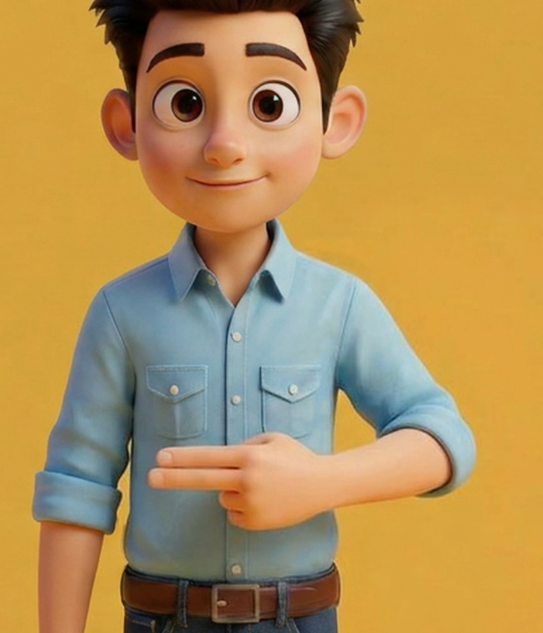
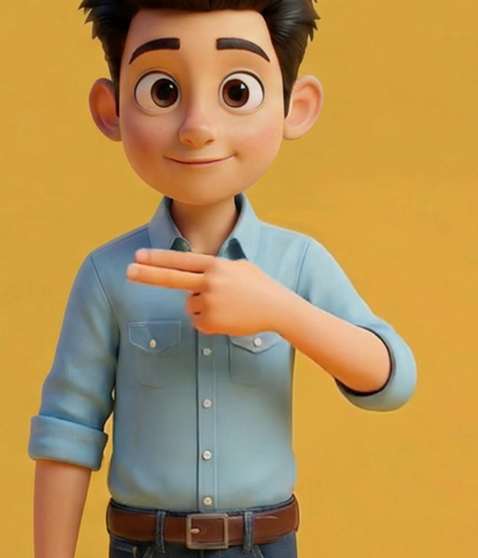
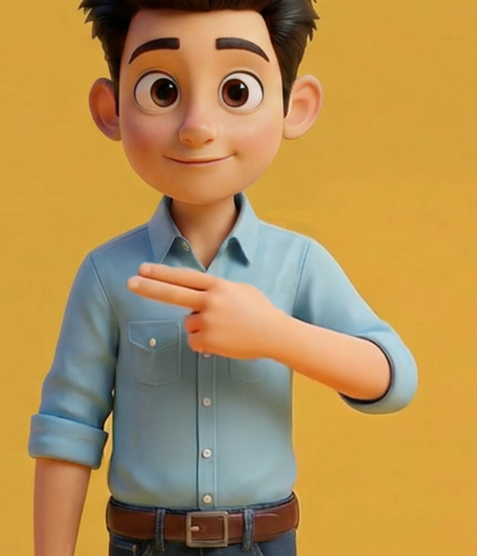
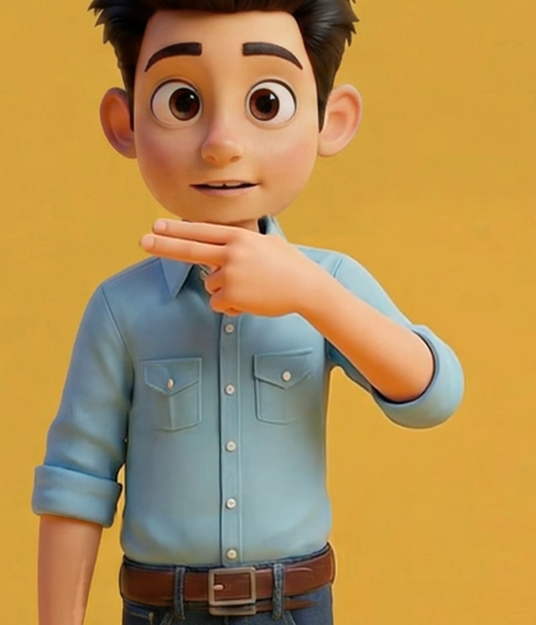
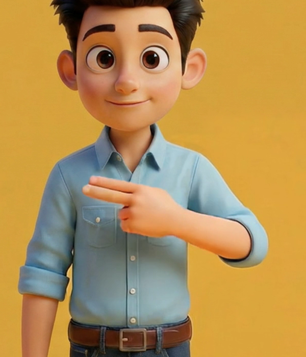
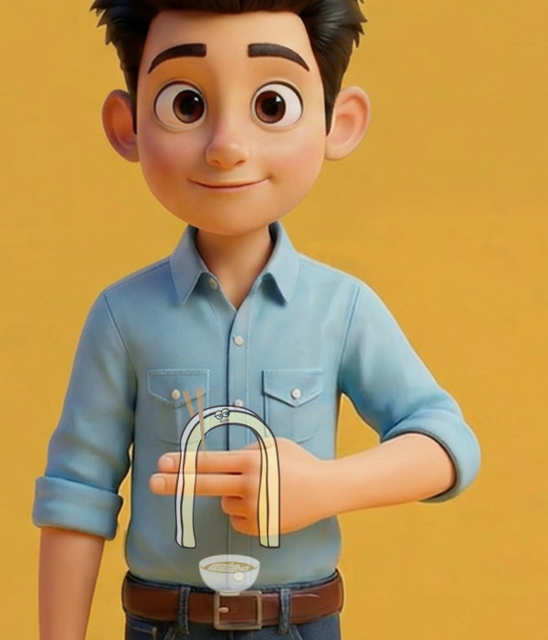
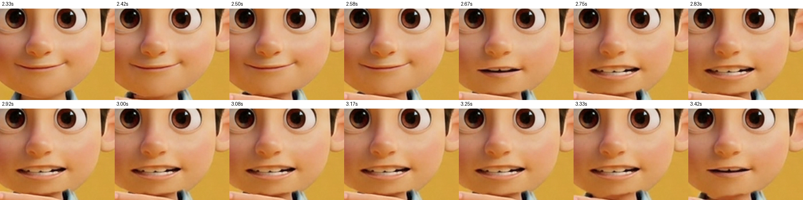
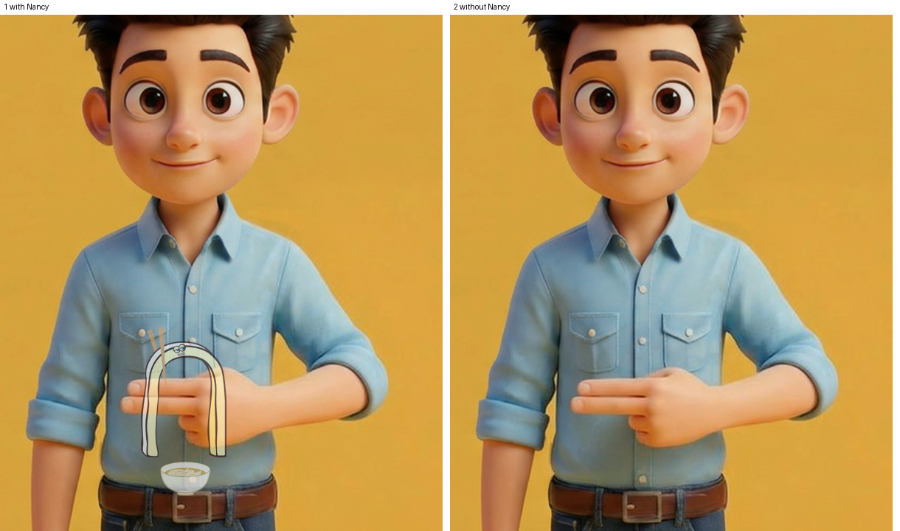
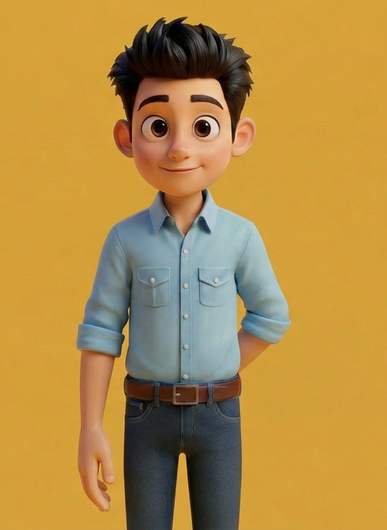

1 · 動画
音を出して、見てください。
名前 → /n/ ×3（8.25秒）確かめたコマ
確かめたコマ（原寸の切り出し）
画像を押すと原寸で開きます




















作成：フォニ丸pi
PROS PHONICS / 成果物 · N・v6
蜂谷さんのご確認（11/5 23:44）の5点を直しました。作り方は v5 と同じで、腕なしの下地に動画の腕を不透明で重ねています。









| 文字 | 判定 | 中身 |
|---|---|---|
| N | ○ | 1 オレンジの線: 原因は2つでした。①下地の胸に、動画の腕の色が少し混ざっていた → 背景の所だけに限って直しました。②お腹の時に出す Nancy の絵の左上に描かれている箸が、ちょうど胸の上（肩の近く）に重なっていました。②は下の「残っていること」をご覧ください。 |
| N | ○ | 2 あごの手: 動画を作り直し、人差し指の上側があごのすぐ下に触れる高さまで上がるようにしました（2.75秒・4.33秒・5.92秒）。 |
| N | ○ | 3 胸の位置: あいだの「胸」は胸ポケットの高さまで下ろしています（3.83秒・5.42秒）。 |
| N | ○ | 4 口: 閉じた口 → 少し開いた口 → n_2 の口 → 少し開いた口 → 閉じた口と、3枚の絵を1枚ずつ順に替えます（開くのに約0.45秒、閉じるのに約0.45秒）。2つの口を半透明で重ねることはしないので、口が二重になるコマはありません。 |
| N | ○ | 5 Nancy: 手が動き出す約0.15秒前に消し切ります（2.00秒のコマで Nancy は消えています）。戻ってからは0.2秒後に出します。 |
| N | △ | 動き: FAL Wan 3.0 i2v（はじめの絵を左右反転して生成→戻す、seed 1306）。動画1本（お腹→あご→お腹）のコマを、あご→胸→あごの所で行き来させて3回にしています。 |
| N | △ | 口: 少し開いた口の絵は、はじめの絵の口だけを変えて新しく作りました（FAL nano-banana-pro/edit）。 |
| N | △ | sha256 先頭 ba5b4c328259 |
ご意見は phonics-seisaku チャンネルで @phonimaru-pi を付けて書いてください（例: @phonimaru-pi B の手をもう少しゆっくり）。
N_nancy_noodle_v6.mp4 sha256 ba5b4c328259